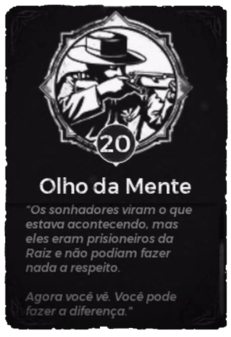

Remnant From The Ashes
A história por trás do jogo

Capítulo 1 - A Invasão
Para início de conversa temos o Dr. Urik Harsgaard, cientista que nos anos 60 estava à frente de pesquisas que giravam em torno de cristais misteriosos com runas, que são os cristais vermelhos que a gente usa durante o jogo. Não sabemos como esses cristais foram encontrados e nem exatamente quando foram encontrados, porém em 30 de setembro de 1960 o comandante Neville deu acesso total ao Urik no que dizia respeito às escrituras que já haviam sido descobertas, Neville suspeitava de algo extraterrestre, porém o Urik achava que se tratava de algo de uma civilização muito antiga, ele começa a encontrar um padrão e começa a desenvolver um dicionário. A galera achou que ele estava biluteteia dazideia e não deu muita bola.
Em 7 de Junho 1961 o Harsgaard descobre que o cristal serve não só como fonte de energia, mas também que ele consegue se comunicar com o outro lado e começa a ter contato com um tal de Clawbone (Osteogarra), ele descobre que essa “entidade” alienígena (ele descobre que ele vem de outro mundo e que existem vários outros mundos) que escreveu as runas, é uma espécie de líder desse local e chama esse cristal de Fragmento do Mundo, que pode ser usado como dispositivo de visualização e até de transporte.
Clawbone fala que a galera dele lá é imortal de Harsgaard curte esse papo e quer pra ele também.
É então que Harsgaard cria o projeto dos sonhadores. A cobaia colocava um capacete, que conectava a cobaia ao cristal através de cabos, assim quando a cobaia sonhasse com os mundos acessíveis através do cristal seria possível ver esse mundo pelos olhos do sonhador.
Aqui cabe umas curiosidades. As cobaias eram drogadas e sedadas, porém, provavelmente pelo momento que o mundo estava passando elas começaram a desenvolver depressão, ansiedade, vários problemas psicológicos bizarros. Outra coisa, tiveram 2 casos curiosos no início dos testes.O primeiro foi de uma cobaia no setor 2 que, talvez tenha tido uma conexão, mas após ser retirado do sonho, mata alguns guardas e se mata, o setor 2 entra em quarentena depois disso, chegam a estudar o corpo da cobaia e encontram um tipo de Fibra em seu cérebro. Depois disso o setor 1 também entrou em quarentena, por causa do ocorrido no setor 2 e a primeira cobaia que se chamava Catherine morreu junto com todo mundo do setor 1
Após muitas falhas, em 6 de abril de 1966, no setor 13, a cobaia 2409 conseguiu se conectar à algo por 145 minutos, a priori não se sabia ao que ela tinha se conectado, mas se sabia que havia existido essa conexão. Até que em 10 de abril Harsgaard vai ao setor 13 para investigar melhor a cobaia 2409.
Após alguns dias, outra cobaia havia conseguido se conectar com algo, a cobaia 2419, de nome Gabriel, consegue se conectar com o GUARDIÃO de um mundo com criaturas humanoides e felpudas, apelidadas de Fuzzys.
GUARDIÕES: Seres que são incubidos de proteger seu mundo, cada mundo possui um guardião, exceto a terra. Daqui a pouco eu explico o porquê.
Passado um tempo acompanhando a Cobaia 2419 (Gabriel), algo estranho começou a acontecer, os “Fuzzys” começaram a estranhar algo no guardião deles, começaram a ser um tanto quanto agressivos em certos momentos chegando até a jogarem pedras. Até que um dia os Felpudos se rebelaram e atacaram de fato o Guardião e consequentemente atacaram o Gabriel, que no momento do ataque, apesar de ser apenas um observador, não um agente ativo, teve alterações em seus batimentos cardíacos durante o ataque. Após alguns dias um novo ataque aconteceu, dessa vez matando o Guardião e fazendo Gabriel ter uma parada cardíaca e vir à óbito.
Com o Guardião dos Felpudos morto, o caminho estava livre para o Clawbone (Osteogarra) dominar o mundo “Fuzzy”.
Depois de um tempo os cientistas, ao comando de Harsgaard, decidem tentar se conectar novamente ao mundo em que Gabriel estava conectado, surgindo a Cobaia 2409-1, a Cassa, porém quando eles conectam eles vêm a merda feita já, eles conectam em um novo Guardião, porém esse “Guardião” não passa de um constructo da Raiz, os Felpudos são caçados e mortos e o povo Raiz agora domina esse mundo.
O comandante Neville então sugere uma expedição a esse mundo, porém é aí que a merda acontece.
Antes disso, algo estranho acontece com a cobaia 2923, a conexão dela era tão forte com o outro mundo que ela simplesmente é teletransportada para lá.
Dia 28 de Junho de 1968 a invasão acontece. Usando a conexão de Cassa como porta de entrada, a Raiz invade. Agentes da Raiz aparecem no setor 13 e em vários setores da terra, ninguém estava preparado para isso e muitos morreram no processo. Para evitar mais danos matam a Cassa na intenção de que os ataques cessariam, porém já era tarde demais e a Raiz já havia se estabelecido na terra, até porque Cassa não era o único portal.
Os sonhadores sabiam o que estava acontecendo, porém não podiam fazer nada, como a Característica “Olho da Mente” diz 